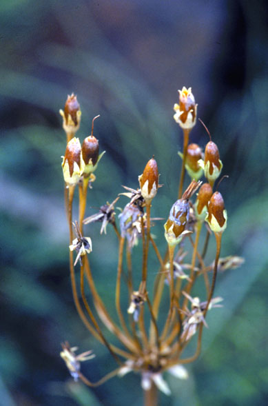
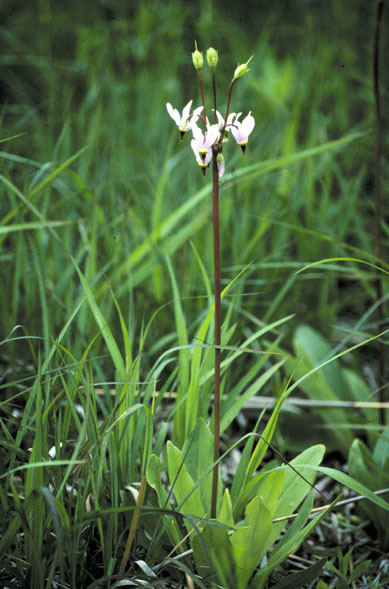
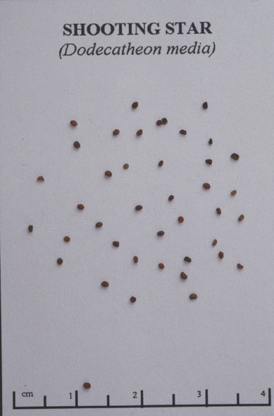
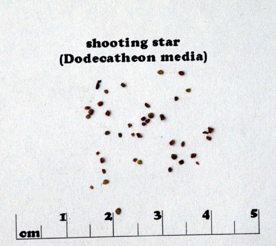

Dodecatheon Meadia
Family: Primulaceae
Shooting Star
Swink/Wilhelm # 6



Click to view larger photo
FLOWERING: April to June
SEED TIMING: July to September
HABITAT: Wet mesic to dry mesic prairies and open savannas
DIAGNOSTIC FEATURES: A low lying perennial. White to pink flowers nodding downwards from an elevated stalk (8 inches to 2 feet high). Leaves in a light-colored basal rosette, 3 to 8 inches, oblong to oblanceolate.
TO PICK: After pollination, each flower turns upright on the stem as it forms a seed capsule. The capsule becomes brown or reddish with a five-parted opening near the tip. The stems should be dryish and breakable below ripe capsules.